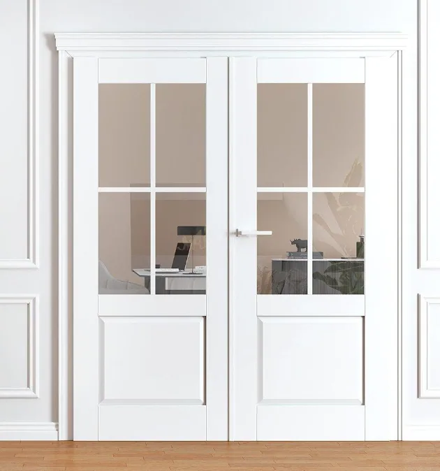
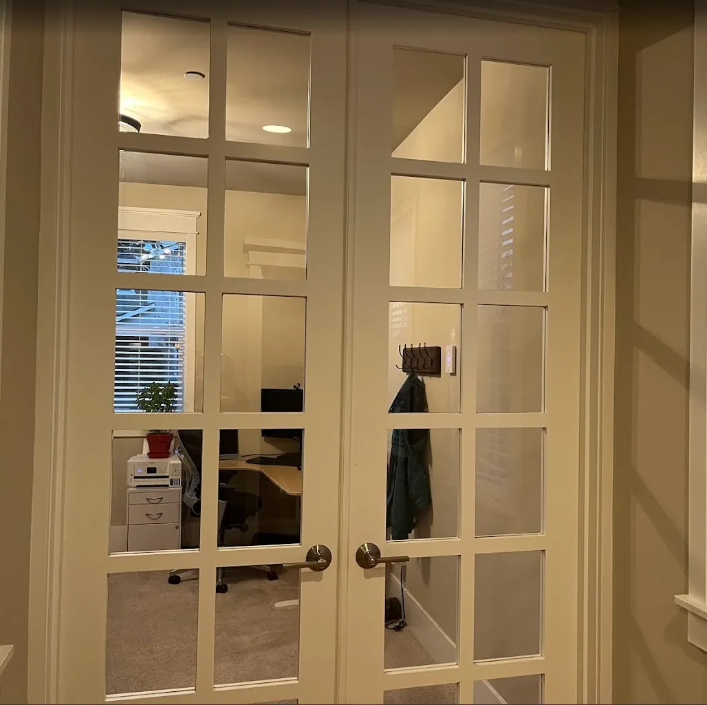

Office
Layout
Piano relocated here: the rosewood Yamaha CLP-825, provisional bench and attached lamp move from living to the office north wall at (8.6,42.0742) ft, keyboard facing south. Keep both desks, loveseat and elliptical. The cabinet has only about 1 inch beside the north desk, not an aisle; the tucked bench clears the default 90-degree French-door leaf tip by about 1.45 inches. Full door swing, occupied playing/pullout, desk use, acoustics, power/cord routing and actual product fit still need review. No furniture or access approval is implied.
Return the 1-foot strip previously added to the office to the guest powder-room/coat-closet arrangement. Office bounds are now x = 0-12.2 ft, z = 41-54.2 ft, approximately 12 ft 2 in × 13 ft 2 in, 161.04 sq ft nominal versus the previous 173.24. The house footprint and stair-side buffer stay unchanged. Wall thickness, structural support, plumbing, and actual clearances need professional coordination.
Keep two 60 × 24-inch desks on opposite walls for privacy, each with two monitors and a task chair. Move the north desk/chair 1 foot south with the wall, to desk center (3.8, 42.35); keep the south desk, 60-inch loveseat, SOLE E20, side window, and 6-foot porch-facing window fixed. The bookcase remains removed. The E20 uses a provisional 65 × 22 × 64-inch footprint, not manufacturer CAD; confirm the model year with SOLE. Verify chair pull-back, window operation, exercise clearance, pedal travel, and headroom.
Doors
Match the latest supplied reference: painted-white 10-lite French double doors, each leaf with two columns by five rows of clear glazing, white muntins, substantial stiles/top and bottom rails, round gold knobs, and dark hinges. Keep the nominal 60-inch-wide × 96-inch-high design envelope with two nominal 30-inch leaves. This supersedes the oak lower-panel/privacy-glass version and the earlier preference for fewer panes.
Keep the opening at x = 12.2 ft, center z = 45.25 ft, span z = 42.75-47.75 ft, height 8 ft, with white Craftsman casing on both faces aligned with the windows. Keep both French-door leaves fully open inward at 90 degrees into the office, perpendicular to the opening, retaining the reference-photo style and conceptual hinges. This supersedes the closed display and persists on reload and view changes. Click/tap either leaf to toggle it closed or to its 180-degree modeled endpoint. No product, handing, inactive-leaf hardware, acoustic rating, manufacturer frame, or rough opening is selected. Confirm safety glazing, true versus simulated divided lites, latch/flush bolts, jambs, floor gaps, structure, and occupied swing clearance. See door details and the opening schedule.

This was our office doors in the previous house. With too many glass panels, it gets dirty and hard to clean.
